벤티365
📲 벤티365 예약 앱 — 1분 접수
성함·연락처·일시·출발/도착지만 입력하면 문자 또는 카카오톡으로 바로 접수됩니다. 홈 화면에 추가하면 앱처럼 쓸 수 있습니다.
제주공항 몇 시간 전 도착해야 할까 — 국내선 기준과 성수기 대비
제주행 비행기를 타러 아침부터 서두르다가 "몇 시간 전에 공항에 가야 하지?" 하고 멈칫한 적, 한 번쯤 있으실 겁니다. 이 글에서는 제주공항 국내선 이용 시 도착 권장
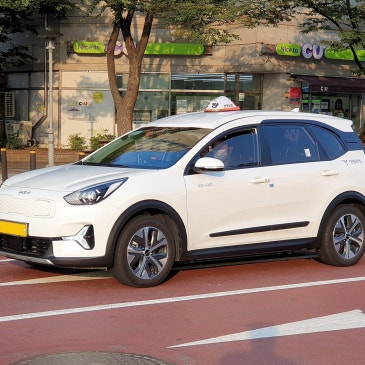
인천공항 택시 예약 — 승차장 번호와 심야할증·요금 기준
밤 11시가 넘어 인천공항에 도착했는데 택시 승차장을 못 찾아 입국장을 두 바퀴 돈 경험, 한 번쯤 있으실 겁니다. 이 글에서는 인천공항에서 택시를 타는 위치와 요금이 정
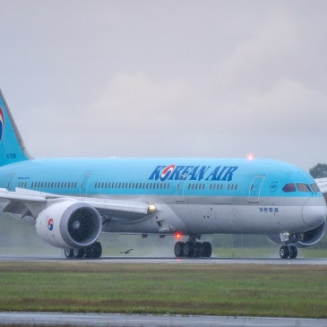
다낭 골프여행 준비 — 골프백 항공 반입 규정과 공항·골프장 이동 정리
다낭 골프여행을 계획하시는 분들이 가장 먼저 막히는 지점이 두 가지입니다. 바로 "골프백은 어떻게 가져가지?"와 "공항에서 골프장까지 어떻게 이동하지?"입니다. 이 글에서
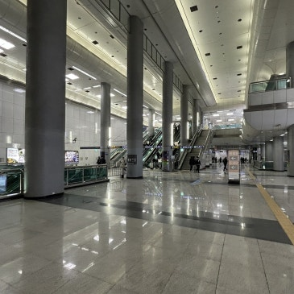
국내선 체크인 마감 시간 — 출발 30분 전, 공항 몇 시 도착할까
국내선 비행기를 타러 아침부터 서두르다가 "체크인은 몇 분 전까지 해야 하지?" 하고 멈칫한 적, 한 번쯤 있으실 겁니다. 이 글에서는 국내선 체크인 마감 시간과 공항 도
예약 차량 탑승 전 확인 항목 — 요금·경로·짐 점검법
공항 픽업이나 골프장 이동을 미리 예약해 두고도, 막상 차를 타기 직전에 "요금이 얼마였더라, 짐이 다 실리나" 하고 불안해지는 분들이 많습니다. 이 글에서는 예약 차량에

인천공항 1터미널 픽업 위치 — 1~14번 게이트와 승차장 번호
가족이나 지인이 제1여객터미널로 도착하는 날, 어디에서 기다려야 할지 막막하셨죠. 제1터미널은 제2터미널과 달리 출구가 알파벳이 아니라 숫자(1번~14번)로 나뉘어 있어서
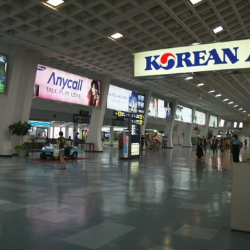
청주공항·김해공항 주차요금 정리 — 하루 얼마, 예약은 될까
지방 공항에서 비행기를 타려면 대개 자가용으로 공항까지 갑니다. 그런데 막상 도착하면 주차비가 하루에 얼마인지, 만차면 어디에 대야 하는지를 미리 몰라 헤매는 분이 많습니
카카오 택시 예약 연락 방법 — 전화·앱·카톡 정리와 배차 실패 대처
새벽 공항 이동을 앞두고 카카오 택시를 예약하려다, 혹시 전화번호부터 검색하신 적 있으시죠. 이 글에서는 카카오 택시 예약이 실제로 어디로 연락해야 되는지, 앱과 카카오톡
위탁수하물 규정 총정리 — 23kg·32kg과 액체류 기준
출국 전날 캐리어 무게를 재다가 "이거 넘으면 어떻게 되지" 하고 손을 멈춘 적 있으시죠. 이 글에서는 위탁수하물 규정을 무게·크기·개수·액체류·반입 금지품목·초과 요금
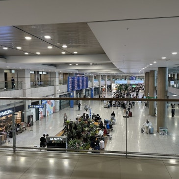
국제선 체크인 오픈·마감 시간 — 카운터는 몇 시에 열고 언제 닫힐까
새벽 7시 비행기인데 몇 시에 공항에 도착해야 하는지, 늦게 도착하면 정말 못 타는지 막막하셨죠. 이 글에서는 인천공항 국제선 기준으로 체크인 카운터가 언제 열고 언제 닫
인천공항 라운지 무료 이용 — 카드 조건 확인 순서와 위치 총정리
출국 3시간 전에 공항에 도착했는데, 면세점을 다 돌고 나면 남는 시간에 어디에 앉아야 할지 막막하시죠. 이 글에서는 인천공항 라운지를 무료로 이용하는 방법과 카드 조건을
코엑스 주차요금 총정리 — 전시회 갈 때 무료 3시간 받는 법
전시회 시간에 맞춰 코엑스에 도착했는데 주차장 입구부터 차량이 늘어서 당황하신 적 있으시죠. 이 글에서는 코엑스 주차요금 구조와 무료·할인 조건, 전시회 기간에 만차를 피
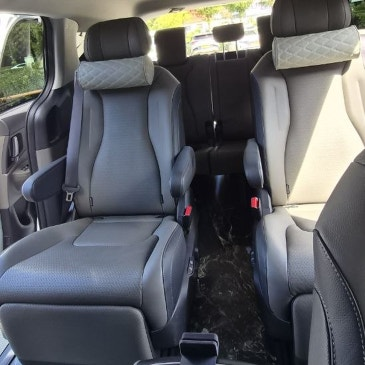
Benti365(카카오벤티)预约指南 — 预约方式、受理时间、车型与取消标准
凌晨 4 点的航班，车要怎么安排?四个高尔夫球包，一辆车装得下吗?如果您在出行前有过这样的担心，这篇文章就是为您写的。本文从运营 Kakao Venti「벤티365」、日常受理预约的立场出发
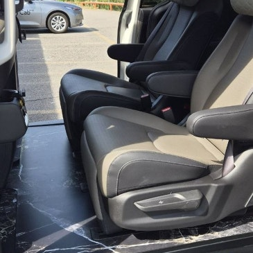
Benti365 (Kakao Venti) Reservation Guide — How to Book, Contact Hours, Vehicles and Cancellations
A 4 a.m. flight, and no idea how to arrange a car. Four golf bags, and no idea whether they fit
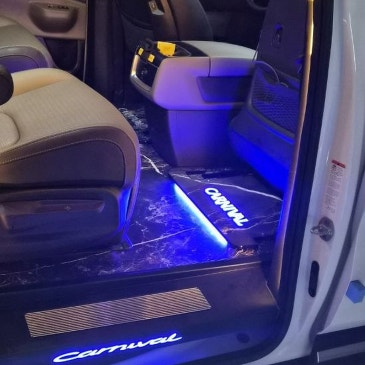
ベンティ365(カカオベンティ)予約案内 — 予約方法・受付時間・車両・キャンセル規定まとめ
「深夜4時のフライトなのに、車をどう手配すればいいのか」「ゴルフバッグ4本を1台に積めるのか」。移動を前にして、こんな不安を感じたことはありませんか。この記事は、カカオベンティ「벤티365」
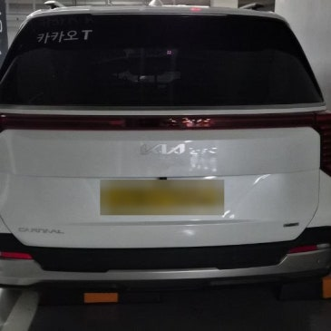
Kakao Venti(카카오벤티)是什么 — 车型、乘车人数与行李标准汇总
全家出行，行李却堆了一大堆。想去打高尔夫，四个球包不知道怎么装。要赶早班机，普通出租车只有四个座位，坐着又挤——。如果您有这些困扰，请关注一下 Kakao Venti(카카오벤티)。本文用中
What Is Kakao Venti? — Vehicle Types, Seating Capacity and Luggage Limits
Family trip, and the luggage has piled up. A round of golf, and you have no idea how to fit fou
カカオベンティ(Kakao Venti)とは — 車種・乗車人数・荷物の基準まとめ
家族旅行なのに荷物が山ほどある。ゴルフ場へ行くのにゴルフバッグを4本どう積めばいいのか。早朝便なのに普通のタクシーは4人乗りで狭い——。そんな悩みをお持ちの方に向けて、この記事ではカカオベン
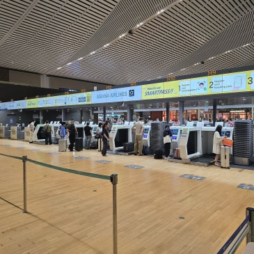
인천공항 혼잡도·김포공항 혼잡도 확인법 — 출국장 대기시간 미리 보기
새벽 비행기를 타러 갔는데 출국장 줄이 끝이 안 보여 발만 동동 굴렀던 경험, 한 번쯤 있으실 겁니다. 공항 혼잡도는 이제 집을 나서기 전에 스마트폰으로 미리 확인할 수
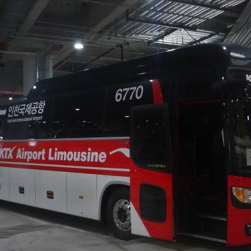
심야 공항버스 노선 총정리 — 강남·청량리·잠실 시각과 요금
새벽 비행기라 전날 밤부터 마음이 놓이지 않으시죠. 막차가 끊긴 시간에 인천공항까지 어떻게 나가야 하는지, 택시비가 얼마나 나올지 걱정부터 앞섭니다. 이 글에서는 인천공항

김포공항 택시 타는 곳 — 국내선 4~6번 출입문 동선과 요금
비행기에서 내려 짐을 찾고 나오면 그때부터가 진짜 시작입니다. 김포공항에서 택시를 타려는데 어디로 나가야 하는지 몰라 한참 헤매는 분들이 많습니다. 이 글에서는 김포공항
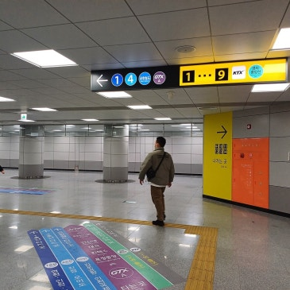
KTX·SRT에서 공항철도 가는법 — 서울역 환승 43분 동선 정리
지방에서 KTX나 SRT를 타고 올라와 인천공항으로 갈아타야 할 때, 어느 역에서 내려야 하는지 헷갈리셨죠. 이 글에서는 서울역에서 공항철도로 갈아타는 실제 동선과 요금·
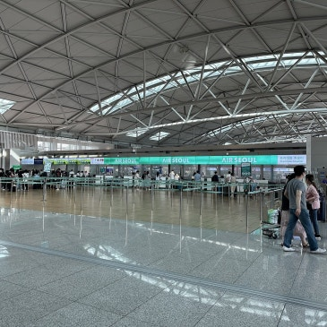
인천공항 마중 위치·피켓 준비 — 처음 마중 나갈 때 체크리스트
가족이나 지인이 해외에서 돌아오는 날, 처음 공항 마중을 나가면 "어디에 서서 기다려야 하지"부터 막막합니다. 터미널도 두 개, 입국장도 여러 구역이라 엉뚱한 곳에 서 있
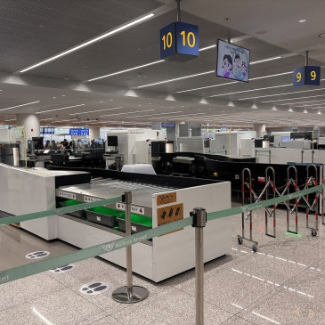
환전 계산기 활용법 — 수수료 아끼는 환전 순서 5단계
출국 전날 저녁, 은행 앱에서 달러 환율을 열어 보면 숫자가 여러 개라 어느 것을 봐야 할지 헷갈립니다. 이 글에서는 환전 계산기의 숫자를 그대로 믿으면 안 되는 이유와,
국내 골프여행 이동수단 — KTX·전용차량, 골프백 4세트 기준
골프 약속이 잡히면 라운드보다 먼저 고민되는 것이 이동입니다. 국내 골프여행은 골프백과 캐리어를 함께 움직여야 해서, 이동수단 선택이 하루 일정의 성패를 가릅니다. 결론부
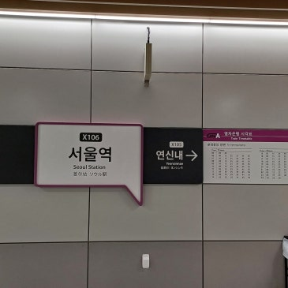
서울역 공항철도 직통열차 — 도심공항터미널 예약·수하물 총정리
서울역에서 인천공항으로 갈 때, 무거운 캐리어를 끌고 공항까지 가서 체크인 줄을 다시 서는 게 부담스러우신가요. 서울역 공항철도 직통열차를 이용하면 서울역 지하 2층 도심
인천공항 픽업존 위치와 이용법 — 1·2터미널 동선과 대기 방법
가족이나 지인이 인천공항에 도착하는 날, 차로 마중을 나가면 "어디에 서서 기다려야 하나"부터 막막합니다. 터미널마다 게이트 번호가 다르고, 도착층 도로는 잠깐도 세워두기
여권 재발급 절차와 소요 기간 — 여권 발급 수수료와 온라인 신청 조건
출국일은 다가오는데 여권 유효기간이 얼마 남지 않았다는 안내를 받으면 마음이 급해집니다. 여권 재발급은 방문하지 않고 온라인으로도 신청할 수 있지만, 신청이 곧 발급은 아
골프백 항공커버 추천 — 바퀴형·하드케이스 차이와 항공 위탁 규정
해외 골프 여행을 준비하면서 가장 막막한 순간이 골프백을 비행기에 어떻게 싣느냐입니다. 클럽은 기내에 들고 탈 수 없고, 그냥 맡기자니 파손이 걱정되시죠. 이 글에서는 골
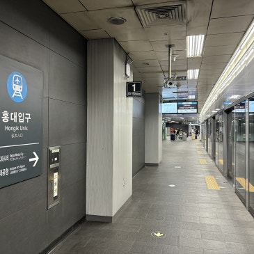
공항철도 요금표와 시간표 총정리 — 직통·일반·환승 한 번에
인천공항으로 갈 때 공항철도를 이용할까 고민되시죠. 직통열차와 일반열차 중 무엇이 나은지, 요금은 얼마인지, 첫차와 막차는 언제인지 헷갈리는 분이 많습니다. 이 글에서는